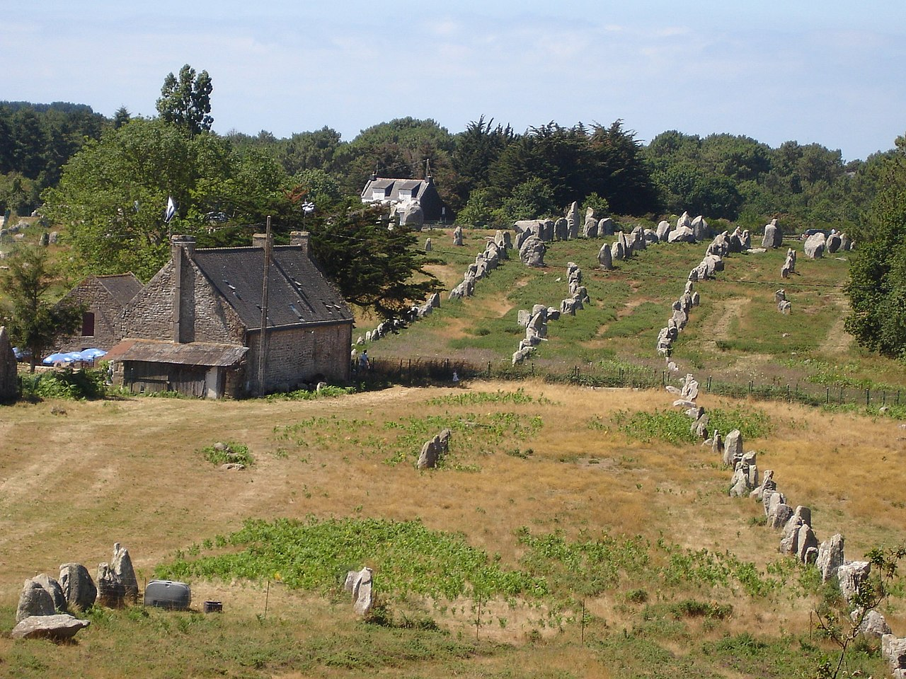
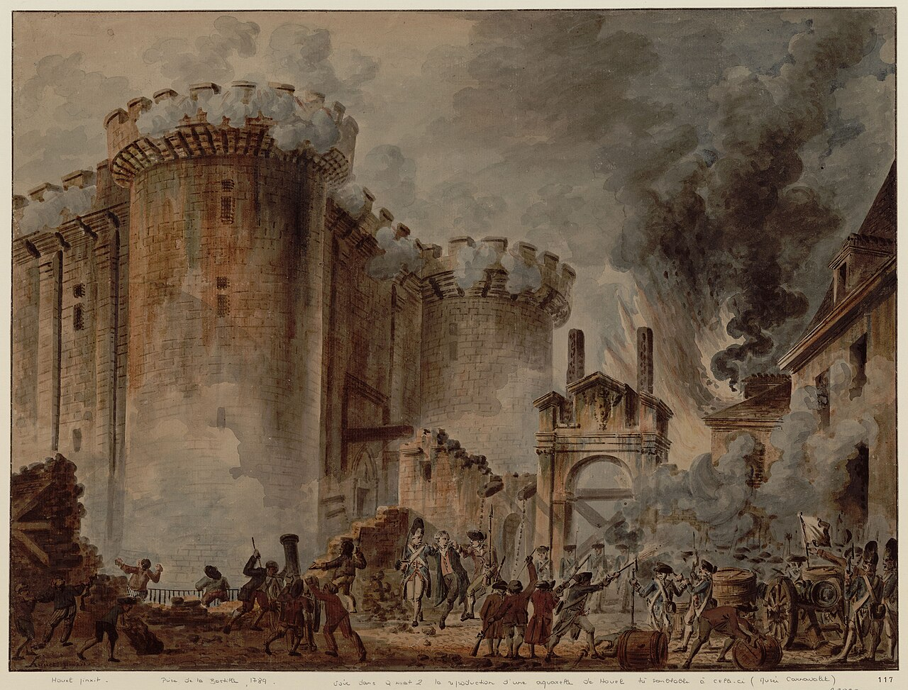
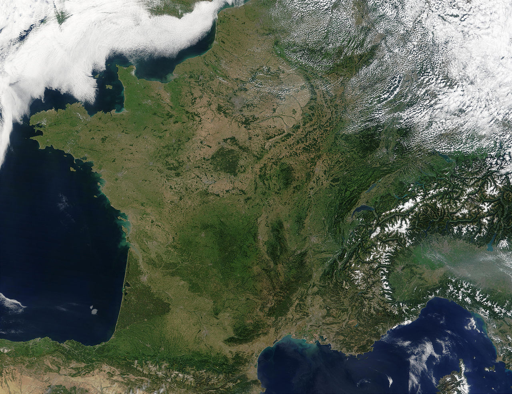
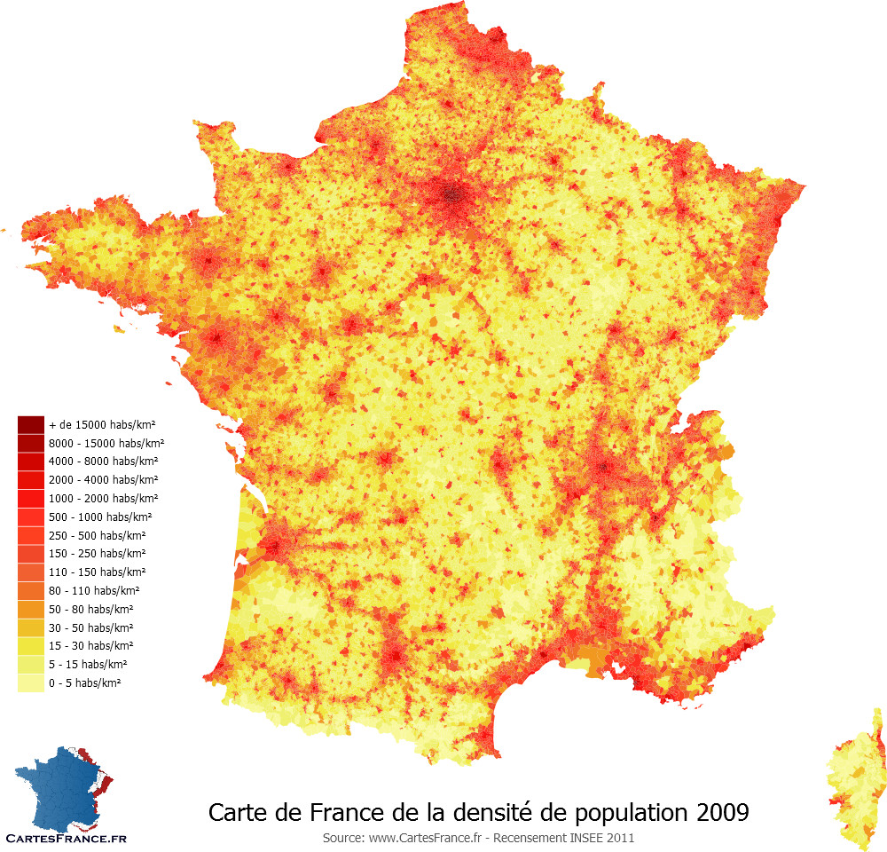

França (em francês: France; pronúncia em francês: [fʁɑ̃s] (escutarⓘ)), oficialmente República Francesa (em francês: République française; [ʁepyblik fʁɑ̃sɛz]), é um país, ou, mais especificamente, um Estado unitário localizado na Europa Ocidental, com várias ilhas e territórios ultramarinos noutros continentes. A França Metropolitana estende-se do Mediterrâneo ao Canal da Mancha e Mar do Norte, e do rio Reno ao Oceano Atlântico. É muitas vezes referida como L'Hexagone ("O Hexágono") por causa da forma geométrica do seu território e partilha fronteiras com a Bélgica e Luxemburgo a norte; Alemanha a nordeste; Suíça e Itália a leste; Espanha ao sul e com os microestados de Mônaco e Andorra. A nação é o maior país da União Europeia em área e o terceiro maior da Europa, atrás apenas da Rússia e da Ucrânia (incluindo seus territórios ultramarinos, como a Guiana Francesa, o país torna-se maior que o território ucraniano).
Saiba mais sobre o país!

Originalmente aplicado a todo o Império Franco, o nome "França" vem do latim Francia, ou "terra dos francos".[17] Existem várias teorias quanto à origem do nome francos. Seguindo os precedentes de Edward Gibbon e Jacob Grimm,[18] o nome dos francos foi associado à palavra frank (livre) em inglês.[c] Sugeriu-se que o significado de "livre" fosse adotado porque, após a conquista da Gália, apenas os francos estavam livres da tributação romana.[19] Outra teoria é que ela é derivada da palavra protogermânica frankon, que se traduz como "dardo" ou "lança", visto que o machado usado pelos francos era conhecido como francisca.[20] No entanto, determinou-se que essas armas foram nomeadas devido à sua utilização pelos francos, ao invés do contrário.[21]
Conheça mais sobre a Etimologia da França!
A história da França tem suas raízes no período Paleolítico, ainda na Pré-história. As culturas mais antigas são as do paleolítico (50 000-8 000 a.C.), que deixaram rica herança artística de pinturas rupestres, como as de Lascaux. Os gregos, no século VII a.C., estabeleceram uma colônia em Marselha e negociaram com o interior através do vale do Ródano. No século V a.C. a cultura de La Tène se estendeu do leste da Gália a todo o resto do mundo celta.
Descubra mais sobre a historia francesa!

Diante de problemas financeiros, o rei Luís XVI convocou os Estados-Gerais (reunindo as três estamentos do reino) em maio de 1789 para propor soluções para o governo. Na sequência de um impasse, os representantes do terceiro estado formaram-se numa Assembleia Nacional, sinalizando o surgimento da Revolução Francesa. No início de agosto de 1789, a Assembleia Nacional Constituinte aboliu os privilégios da nobreza,[54] como a servidão pessoal e os direitos exclusivos de caça. Através da Declaração dos Direitos do Homem e do Cidadão (26 de agosto de 1789), a França estabeleceu direitos fundamentais para os homens. A Declaração afirma "os direitos naturais e imprescritíveis do homem à liberdade, propriedade, segurança e resistência à opressão". A liberdade de expressão e de imprensa foram declaradas e as prisões arbitrárias foram proibidas. Ela solicitou a destruição de privilégios aristocráticos e proclamou a liberdade e a igualdade de direitos para todos os homens, bem como o acesso a cargos públicos com base em talentos e não nascimento.[55]
Descubra mais sobre a Revolução francesa! A França metropolitana está situada na faixa entre as latitudes de 41 e 51 graus no hemisfério norte (Dunquerque está um pouco a norte da latitude de 51 graus) e entre as longitudes de 6 graus no hemisfério ocidental e 10 graus no hemisfério oriental. Está ainda localizada na parte ocidental da Europa e, portanto, situada na zona de clima temperado do hemisfério norte. Enquanto a França metropolitana está localizada na Europa Ocidental, a França também tem territórios na América do Norte, América Central, América do Sul, sul do Oceano Índico, Oceano Pacífico e uma reivindicação na Antártida.[d] Estes territórios têm diferentes formas de governo que vão desde departamento de ultramar à coletividade de ultramar. Os departamentos e coletividades ultramarinas da França e partilham fronteiras terrestres com o Brasil e Suriname (a partir da Guiana Francesa) e com as antigas Antilhas Holandesas (a partir de São Martinho).[87][88]
Saiba mais sobre a Geografia!
A população estimada da França em janeiro de 2023 era de aproximadamente 68,1 milhões de pessoas, das quais 66 milhões habitavam a França Metropolitana,[97] com uma densidade de 118 habitantes por quilômetros quadrado[98], 2 209 754 habitam a França ultramarina[99], incluindo uma comunidade de dois mil cientistas e investigadores destacados na Antártida.[d]
Conheça sobre a população francesa
A República Francesa é uma república unitária semipresidencialista com fortes tradições democráticas.[137] A constituição da V República foi aprovada por referendo em 28 de setembro de 1958.[138] É extremamente reforçada a autoridade do executivo em relação ao Parlamento. O poder executivo em si tem dois dirigentes: o presidente da República, atualmente Emmanuel Macron (Renascimento) que é chefe de estado e é eleito diretamente por sufrágio universal para um mandato de cinco anos (até 2000, eram sete anos)[139] e o Governo, liderado pelo primeiro-ministro nomeado pelo presidente. Após a eleição legislativa de 2017, o primeiro-ministro do país passou a ser Édouard Philippe.[140]
Descubra sobre a politica!
O idioma oficial na França é o francês,[130] proveniente do franciano,[131] variante linguística falada na Ilha de França que nos princípios da Idade Média e, ao longo dos séculos, se impôs ao resto das línguas e variantes linguísticas que se falam em quaisquer partes da França. Também há línguas minoritárias, como o catalão, o bretão, o corso, o occitano, o provençal, o franco-provençal, o basco e o alsaciano.[132]
Olá, tudo bem?
Em francês: Bonjour, tout va bien
Sim, obrigado
Em francês: oui merci
| Informação | Detalhes | |
|---|---|---|
| Idioma | Oficial | Francês |
| Regional | Bretão, Basco, etc. | |
| População | Aproximadamente 67 milhões | |
| Área | 551.695 km² | |
| Moeda | Euro (€) | |
| Capital | Paris | |